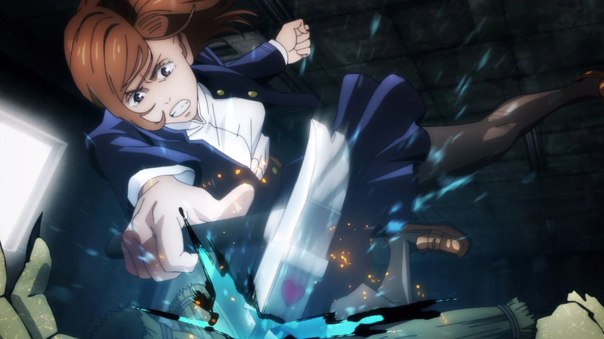

¿Quien es?
Nobara Kugisaki (釘崎野薔薇 Kugisaki Nobara) es una de las protagonistas de la serie manga Jujutsu Kaisen. Es una estudiante de primer año del Colegio Técnico de Magia Metropolitana de Tokio, y compañera de Yuji Itadori y Megumi Fushiguro.
Solía vivir en el campo, en un pueblo ubicado a cuatro horas de la Estación de Morioka. Llega a Tokio con el fin de convertirse en una Chamán de Jujutsu y poder encontrar a su amiga de la infancia, Saori.
Apariencia

Imagen de Nobara |
Nobara es una joven delgada y de estatura promedio, llegando a medir 160 centímetros.
Lleva el uniforme estándar del Colegio Técnico de Magia Metropolitana de Tokio, que consiste en una camisa de manga larga y un cuello alto de color oscuro, pantalones y zapatos marrón oscuros; ésta misma vestimenta, en el anime, es representada en color azul marino. En el manga, tanto sus ojos como su cabello son de color naranja, y se revela que su cabello fue teñido cuando vivía en su pueblo; mientras que en el anime, tanto sus ojos y su cabello son de un color marrón claro.
Su vestimenta característica consiste en su propia versión del uniforme del Colegio Técnico de Magia Metropolitana de Tokio, que consiste en una chaqueta negra de cuello bajo, con una falda larga negra y medias del mismo color; en el anime, su vestimenta es representada en color azul marino. También utiliza un cinturón de color claro para sostener su martillo, clavos y su muñeca de paja; en el anime, su cinturón es representado de color marrón.
Mientras se encuentra entrenando utiliza una sudadera con capucha de color claro con un patrón de flores oscuras alrededor de sus hombros, pantalones negros y zapatos blancos. Su vestimenta casual suele variar entre vestidos y sudaderas, pantalones negros y zapatos blancos.
Personalidad

Nobara animada |
Nobara es una joven apasionada, extremadamente expresiva y honesta sobre sus sentimientos. Desde el comienzo, muestra interés en todo lo relacionado con el mundo del modelaje y las compras, también muestra que logra enfadarse con facilidad si es rechazada. Muestra su lado verdadero y agresivo en ciertas situaciones, ya sea que provoquen vergüenza o sienta rechazo hacía la otra persona. Durante su enfrentamiento con Momo Nishimiya, ella expresa orgullo por su forma de ser y que prefiere seguir su camino siempre que esté segura de sí misma.
Está dispuesta a dejar ir a las maldiciones cuando están tienen en su poder a rehenes; sabe lo que es importante para ella, y no trata solo de vivir una vida de lujo, está dispuesta a abandonar todo sí eso ayuda en salvar a otros.
Nobara también posee un lado infantil y simpático, aunque rara vez suele mostrarlo y cuando está al lado de Yuji Itadori. También es capaz de trabajar en equipo, demostrándolo cuando hace equipo con Itadori y más adelante con otros chamanes. Ella también es lo suficientemente humilde como para ser capaz de admitir que no está al nivel de otros chamanes como Kento Nanami.
Habilidades
| Habilidad | Descripción | Imagen |
|---|---|---|
| Resonancia | Haciendo uso de un Muñeco Vudú y alguna extremidad de la maldición, Nobara perfora un clavo con el fin de formar una vinculo entre ambos. Cualquier cosa que experimente el muñeco, la maldición también lo experimentará. El efecto de poder suele variar dependiendo de la diferencia de habilidad entre el Nobara y su oponente. |  |
| Horquilla | Permite que a través de una orden de Nobara, cualquier clavo que se utilice como proyectil pueda detonarse en una explosión de energía maldita cerca de su objetivo. Debido a que es una técnica de corto alcance, el efecto de la explosión podría variar en su uso. |
Imagenes de Nobara
|
Apariencia de Nobara (Anime) |

Apariencia de Nobara (Manga) |
|
Nobara usando su técnica maldita (Resonancia) |

Muñeco vudu que Nobara usa para su tecnica |
|
Nobara con Itadori |

Nobara con Megumi |
Curiosidades
- Según información revelada en el Volumen 01 del manga:
- Su cabello es teñido.
- Todo su tiempo libre lo usa para ir de compras.
- Come mucho, compra mucho y disfruta vivir en Tokio.
- En el Capítulo 04, Nobara pateó a Yuji Itadori, que pesa alrededor de 80 kilogramos.
- Según el 1er audio drama, Nobara fue la segunda en inscribirse en el Colegio Técnico de Magia Metropolitana de Tokio, sin embargo fue la última de los de primer año en incorporarse.
- Según información revelada en el Jujutsu Kaisen Official
Fanbook:
- Tiene 16 años.
- Su cumpleaños es el 7 de Agosto.
- Es una chamán de tercer grado.
- Nació en algún lugar de Tohoku.
- Su método de inscripción al Colegio de Tokio fue por recomendación de su abuela.
- Su técnica es la Técnica de Muñeco Vudú.
- Su pasatiempo es ir de compras.
- Su comida favorita es cualquier cosa popular y la sandía.
- Su comida menos favorita son los vegetales ligeramente encurtidos.
- La deshidratación le causa estrés.
- Información revelada de la entrevista con Gege Akutami:
- En su pueblo natal, Nobara trabajaba relativamente como chamán, esto dado que su abuela también es una chamán, por lo que Nobara trabajaba para ella.
- Discutieron cuando Nobara quiso asistir al colegio jujutsu dado que su abuela quería criarla de una cierta manera, pero Nobara quería ir a Tokio.
- Su abuela también es una usuaria de la Técnica de Muñeco Vudú, de quien Nobara heredó esta técnica.
- Tiene noción de lo que es el destello oscuro.
- Pese a que es del campo, Nobara no posee acento dado que su madre no tiene y tampoco Fumi.
- El nombre de Nobara contiene los caracteres para "campo" (野, no?) y "rosa" (薔薇, bara) porque Akutami quería que su nombre se sintiera algo espinoso.
- Akutami dijo que lo mínimo que tiene en cuenta cuando dibuja a Nobara es que se parezca a una chica así los lectores no se confunden.
- Akutami pensó en su nombre y en su estilo de pelea al mismo tiempo.
- De los tres personajes principales, Akutami considera a Nobara el personajes que más fácil se le hace maniobrar.
- El tipo ideal de Nobara es Oda Nobunaga.
- Nobara no era muy popular en su pueblo natal.
- Sus marcas favoritas son Balenciaga y Onitsuka Tiger.